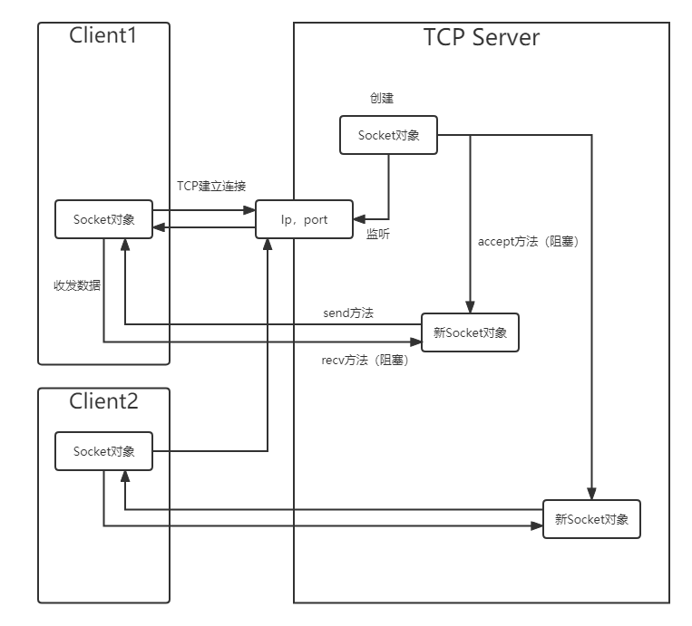
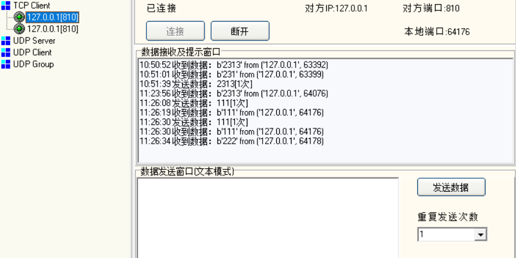
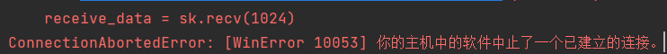
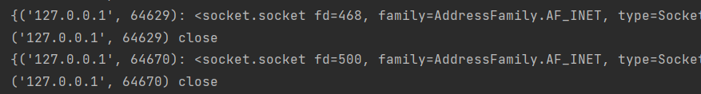

本文主要总结了网络编程原理，使用Python进行服务器端编程，通过较为底层的socket库的编程实现过程了解主要流程。以下均采用TCP 。
网络编程原理 一般把主动发起请求的一端称为client客户端，把被动接受请求并回应的一端成为server服务器端。
client端与server端通信实质上是client某应用进程与server服务进程通信，该通信通道则由Socket（套接字）根据两端的地址（IP，port）建立。
Socket是一种通用的网络编程接口，一般操作系统和编程语言都支持，通过该接口实际上进行了socket相关的系统调用，是很底层的库，因此直接用Socket库编程比较麻烦，但对于初学者了解原理很有帮助。
服务器端编程主要步骤 1 创建监听Socket对象 server端需要对外暴露地址提供服务，因此需要有监听Socket绑定在某端口上等待连接。
2 获取连接（创建新的Socket） 负责监听的Socket对象使用accept方法阻塞等待client连接，当有client经历三次握手建立连接后将返回新的socket对象和客户端地址，此后将由该新的socket对象与client通信，而监听socket对象继续等待新的连接。
3 业务处理 接收到用户数据后需要进行的处理，以及设置返回数据的内容和形式。
以下为示意图

Python编程实现 编写简单的群聊程序需，可接受不同用户的信息并分发到所有已连接客户端
Socket库实现 通过多线程解决recv和accept方法阻塞的问题
1 2 3 4 5 6 7 8 9 10 11 12 13 14 15 16 17 18 19 20 21 22 23 24 25 26 27 28 29 30 31 32 33 34 35 36 import socketimport threadingclass Chat :def __init__ (self, ip='127.0.0.1' , port=810 ): def start (self ): def accept_client (self ): while True :print (self.clients)def receive (self, sk:socket.socket, raddr ): while True :1024 )'{} from {}' .format (receive_data,raddr).encode()for i in self.clients.values():def stop (self ):for i in self.clients.values():

如上图，client可正常收发数据。下图中，client断开将导致server端报错，进程因异常无法正常工作。

改进1-客户端断开 首先解决客户端退出问题，观察到client断开时会发送一个空数据，根据以上报错修改receive函数
1 2 3 4 5 6 7 8 9 10 11 12 13 14 15 16 def receive (self, sk:socket.socket, raddr ): while True :1024 )if msg1 == '' or : break '{} from {}' .format (receive_data, raddr).encode()for i in self.clients.values():def quit (self, raddr ):print ('{} close' .format (raddr))

改进2-服务端结束 1 2 3 4 5 6 7 8 9 10 11 12 13 14 15 16 def stop (self ):for i in self.clients.values(): while True :input ('>>>' ).strip()if cmd == 'stop' :break
改进3-线程安全 由于使用字典保存连接的socket，因此可能造成遍历字典元素时字典size变化的异常抛出，即某线程遍历时恰好切换到其它线程，其它线程有客户端断开或建立连接，造成保存客户端信息的字典元素增减，从而线程不安全。
1 2 3 4 5 6 7 with self.lock:
最终代码附录 1 2 3 4 5 6 7 8 9 10 11 12 13 14 15 16 17 18 19 20 21 22 23 24 25 26 27 28 29 30 31 32 33 34 35 36 37 38 39 40 41 42 43 44 45 46 47 48 49 50 51 52 53 54 55 56 57 import socketimport threadingclass Chat :def __init__ (self, ip='127.0.0.1' , port=810 ): def start (self ): def accept_client (self ): while True :with self.lock:print (self.clients)def receive (self, sk: socket.socket, raddr ): while True :1024 )if msg1 == '' or msg1 == 'quit' :with self.lock:break '{} from {}' .format (receive_data, raddr).encode()for i in self.clients.values():def quit (self, raddr ):print ('{} close' .format (raddr))def stop (self ):with self.lock:for i in self.clients.values(): while True :input ('>>>' ).strip()if cmd == 'stop' :break